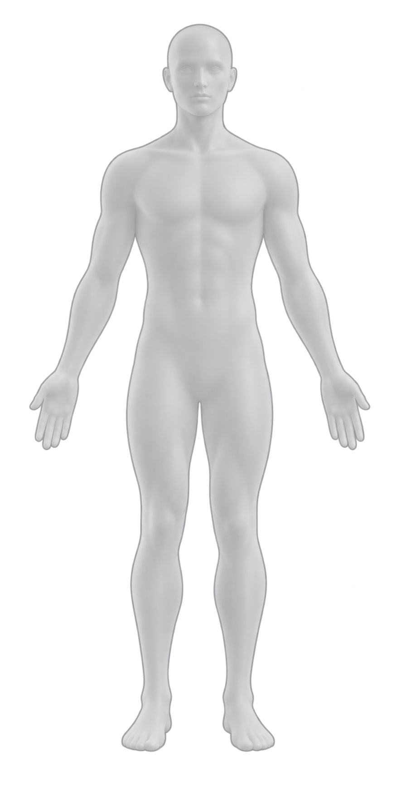

Composición corporal · Contorno muscular
Composición corporal y metabolismo
El seguimiento permite estudiar la relación temporal entre la adiposidad, los estilos de vida y los indicadores de resistencia a la insulina.

Composición corporal con un contorno muscular en blanco y gris, y cerebro visto desde arriba en un tono rosado más claro.